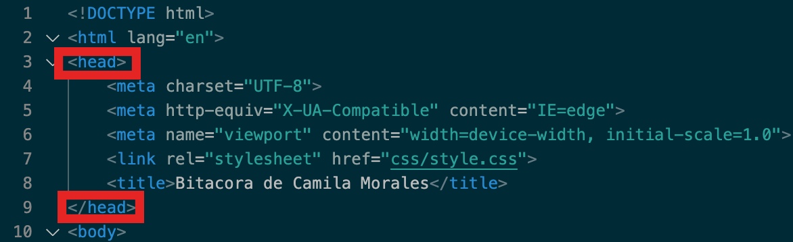

Clase 2
HTML - HyperText Language (Lenguaje de marcado para hipertextos

¿Cómo funciona html?
Con etiquetas, de abertura y cierre que llevan al contenido
Comentarios dentro de HTML
Cosas que no son visibles al usuario, para indicar secciones
Tipos de etiquetas
- Títulos (según jerarquía)
- Etiqueta apertura
- Atributos: identificador - clases
- Valor del atributo
- Contenido
- Cierre de etiqueta
Anidación
Una etiqueta puede contener otra etiqueta - cuidar la estructura en la que van las etiquetas, no traslaparlas
Identación
Aplicar socesivos niveles de márgenes de acuerdo a la animación de etiquetas. Permite identificar con mayor facilidad problemas de animación o de balance en etiquetas de cierre. Se puede identificar on tabuladores y espacios.
Atributos
Existen una amplia variedad de atributos, algunos son generales y otros específicos.
- Generales: id - class - name
- Específicos: href (particular para anclas) - input (campo de texto del type, el tipo de input que se representa)
- data: manera de ingresar información a la etiqueta para hacer alguna funcionalidad